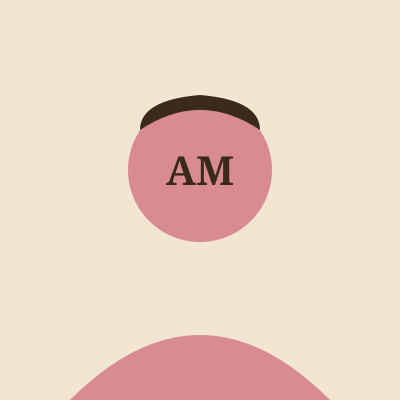
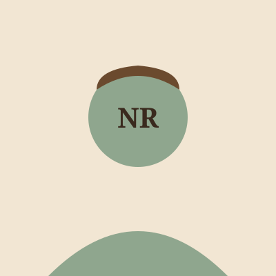
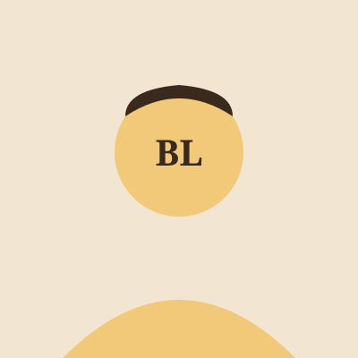

Two hobbies that got out of hand
Leaf & Beans started as a shelf of paperbacks the owner couldn't stop collecting, and a habit of making coffee for anyone who sat down to read them.
From a spare shelf to a full shop
Leaf & Beans opened in 2020 with about 200 secondhand books and a single espresso machine borrowed from a friend's restaurant. The idea was never to separate the two — the shop was always meant to be somewhere you could buy a book and immediately sit down and start it.
Six years on, the shelf has grown into 1,400+ titles, the borrowed espresso machine has been replaced twice, and the café now runs its own small food menu alongside the coffee.
— we still trade books at the counter, same as day one
A short timeline
Opened with 200 books and a borrowed espresso machine
Started in a single room on Saddar Road with a handful of regulars from day one.
Started the book trade-in counter
Customers began swapping their own paperbacks for store credit, and the shelves grew fast.
First monthly book club
What began as five people around one table is now a waitlisted monthly event.
Opened the reading nook and window seats
Knocked through to the back room to make space for the armchairs people kept asking for.
The people who run it

Amina
Founder — buys most of the secondhand stock personally

Noor
Head Barista — designs the seasonal drinks menu

Bilal
Events Host — runs the book club and poetry nights
A few things we won't compromise on
Real coffee, not filler
Beans are sourced in small batches and rotated often, rather than a single blend used year-round.
Books people actually want
Every trade-in is read or skimmed by someone on staff before it goes on the shelf.
No pressure to move on
There's no minimum spend to sit down, and refills on hot water for tea are always free.